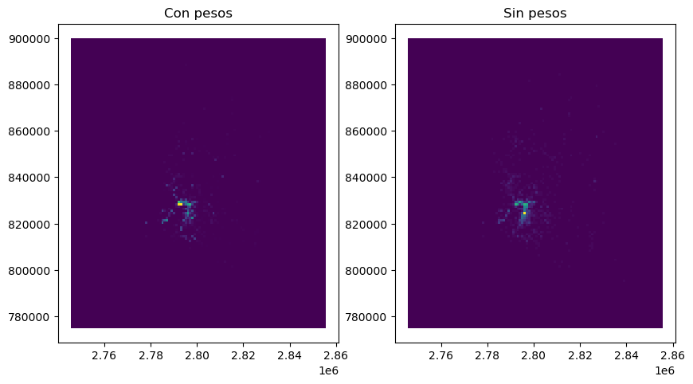

pth = descarga_poligonos_ciudades()
zmvm = gpd.read_file(pth)
zmvm = zmvm.loc[zmvm.CVE_SUN == '13']
malla = Malla.desde_capa(zmvm, 1000)
malla.datos.plot()El archivo ya está descargado<AxesSubplot:>Para trabajar con datos sobre uso de suelo y estructura urbana, necesitamos definir el soporte espacial (entendido como una teselación del espacio de estudio) que va a ser base para estudiar el uso de suelo. Podemos pensar que existen dos tipos generales de soporte espacial: regulares e irregulares. Los soportes regulares cubren el espacio utilizando siempre la misma figura, como en el caso de las mallas rectangulares o hexagonales, por otro lado, los soportes irregulares cubren el espacio con polígonos arbitrarios, como en el caso de los municipios, AGEBs o colonias.
En este módulo incluimos clases y métodos que nos permiten trabajar con diferentes tipos de soporte espacial. Estos métodos pueden ser usados de forma directa, creando objetos de las clases Malla o Poligonos para agregar y calcular variables de uso de suelo y medio construido, o a través de la clase UsoDeSuelo que implementa algunas herramientas de análisis.
Soporte ()
Clase abstracta que define la interfaz para los diferentes tipos de Soporte.
Algunos tipos de análisis, como las regresiones de uso de suelo para contaminantes atomsféricos, utilizan datos de uso de suelo en mallas. Para este tipo de aplicaciones la librería provee un conjunto de herramientas para crear mallas y agregar datos en ellas.
El primer elemento de este módulo es una Clase para contener la funcionalidad que vamos a implementar. Vamos a comenzar por definir la estructura básica de la clase y luego iremos agregando funcionalidad.
Malla (datos:geopandas.geodataframe.GeoDataFrame=None, size:float=1000)
Representa una malla para procesar variables de uso de suelo.
| Type | Default | Details | |
|---|---|---|---|
| datos | GeoDataFrame | None | La malla vectorial |
| size | float | 1000 | Tamaño de los elementos de la malla (en las unidades de la proyección de layer) |
| Returns | None |
La clase Malla contiene dos campos: size y datos con el tamaño de los elementos de la retícula y el GeoDataFrame con los polígonos de la malla respectivamente. Por lo pronto la clase sólo tiene un classmethod que nos permite construir un objeto a partir de una capa vectorial:
Malla.desde_capa (capa:geopandas.geodataframe.GeoDataFrame, size:float)
| Type | Details | |
|---|---|---|
| capa | GeoDataFrame | La capa que define la extensión de la malla |
| size | float | Tamaño de la malla en unidades de la proyección |
pth = descarga_poligonos_ciudades()
zmvm = gpd.read_file(pth)
zmvm = zmvm.loc[zmvm.CVE_SUN == '13']
malla = Malla.desde_capa(zmvm, 1000)
malla.datos.plot()El archivo ya está descargado<AxesSubplot:>Podemos ver la malla superpuesta al polígono que usamos para construirla:
fig, ax = plt.subplots(figsize=(8, 8))
zmvm.plot(ax=ax)
malla.datos.boundary.plot(ax=ax, edgecolor="black", linewidth=0.1)<AxesSubplot:>
También podemos crear una malla a partir de un raster (p. ej. un geotiff), en este se crea una malla con las mismas características que el raster de entrada.
Malla.desde_raster (raster:Union[str,pathlib.Path])
| Type | Details | |
|---|---|---|
| raster | Union | El raster a partir del que vamos a crear la malla. |
pth_raster = descarga_raster_ejemplo()
malla_raster = Malla.desde_raster(pth_raster)
malla_raster.datosEl archivo ya está descargado
EPSG:4326| geometry | grid_id | |
|---|---|---|
| 0 | POLYGON ((-99.65011 20.06836, -99.65011 20.059... | 0 |
| 1 | POLYGON ((-99.64113 20.06836, -99.64113 20.059... | 1 |
| 2 | POLYGON ((-99.63215 20.06836, -99.63215 20.059... | 2 |
| 3 | POLYGON ((-99.62317 20.06836, -99.62317 20.059... | 3 |
| 4 | POLYGON ((-99.61418 20.06836, -99.61418 20.059... | 4 |
| ... | ... | ... |
| 14963 | POLYGON ((-98.63502 18.93649, -98.63502 18.927... | 14963 |
| 14964 | POLYGON ((-98.62604 18.93649, -98.62604 18.927... | 14964 |
| 14965 | POLYGON ((-98.61705 18.93649, -98.61705 18.927... | 14965 |
| 14966 | POLYGON ((-98.60807 18.93649, -98.60807 18.927... | 14966 |
| 14967 | POLYGON ((-98.59909 18.93649, -98.59909 18.927... | 14967 |
14968 rows × 2 columns
Malla.to_crs (to_crs:Union[int,str,pyproj.crs.crs.CRS])
Se encarga de transformar de coordenadas.
| Type | Details | |
|---|---|---|
| to_crs | Union | El crs al que queremos reproyectar |
| Returns | Malla |
malla_raster_utm = malla_raster.to_crs(32614)
print(malla_raster_utm.crs.to_string(), malla_raster.crs)EPSG:32614 EPSG:4326Ahora vamos a agregar la funcionalidad para agregar una capa de puntos en la Malla.
Nota: el decorador @patch de fastcore.basics nos permite fácilmente agregar funcionalidad a una clase ya definida.
Malla.agrega_puntos (puntos:geopandas.geodataframe.GeoDataFrame, campo:str='cuenta', clasificacion:str=None, pesos:str=None)
Regresa una Malla con los conteos de puntos en cada elemento.
| Type | Default | Details | |
|---|---|---|---|
| puntos | GeoDataFrame | La malla en la que se va a agregar | |
| campo | str | cuenta | Nombre del campo en el que se guarda el resultado |
| clasificacion | str | None | Columna de puntos que clasifica a las observaciones (ignora campo) |
| pesos | str | None | Columna con pesos para las unidades |
| Returns | Malla |
La forma más sencilla de usar este método es simplemente agregar todos los puntos de una capa en la Malla.
pth = descarga_denue(tipo='ejemplo')
puntos = gpd.read_file(pth)
agregado = malla.agrega_puntos(puntos, campo="puntos")
agregado.datosEl archivo ya está descargado| grid_id | puntos | geometry | |
|---|---|---|---|
| 0 | 0 | 0.0 | POLYGON ((2745631.810 774927.105, 2746631.810 ... |
| 1 | 1 | 0.0 | POLYGON ((2745631.810 775927.105, 2746631.810 ... |
| 2 | 2 | 0.0 | POLYGON ((2745631.810 776927.105, 2746631.810 ... |
| 3 | 3 | 0.0 | POLYGON ((2745631.810 777927.105, 2746631.810 ... |
| 4 | 4 | 0.0 | POLYGON ((2745631.810 778927.105, 2746631.810 ... |
| ... | ... | ... | ... |
| 13745 | 13745 | 0.0 | POLYGON ((2854631.810 894927.105, 2855631.810 ... |
| 13746 | 13746 | 0.0 | POLYGON ((2854631.810 895927.105, 2855631.810 ... |
| 13747 | 13747 | 0.0 | POLYGON ((2854631.810 896927.105, 2855631.810 ... |
| 13748 | 13748 | 0.0 | POLYGON ((2854631.810 897927.105, 2855631.810 ... |
| 13749 | 13749 | 0.0 | POLYGON ((2854631.810 898927.105, 2855631.810 ... |
13750 rows × 3 columns
La función regresa una copia del objeto original con el nuevo campo, el objeto original no se modifica:
malla.datos| grid_id | geometry | |
|---|---|---|
| 0 | 0 | POLYGON ((2745631.810 774927.105, 2746631.810 ... |
| 1 | 1 | POLYGON ((2745631.810 775927.105, 2746631.810 ... |
| 2 | 2 | POLYGON ((2745631.810 776927.105, 2746631.810 ... |
| 3 | 3 | POLYGON ((2745631.810 777927.105, 2746631.810 ... |
| 4 | 4 | POLYGON ((2745631.810 778927.105, 2746631.810 ... |
| ... | ... | ... |
| 13745 | 13745 | POLYGON ((2854631.810 894927.105, 2855631.810 ... |
| 13746 | 13746 | POLYGON ((2854631.810 895927.105, 2855631.810 ... |
| 13747 | 13747 | POLYGON ((2854631.810 896927.105, 2855631.810 ... |
| 13748 | 13748 | POLYGON ((2854631.810 897927.105, 2855631.810 ... |
| 13749 | 13749 | POLYGON ((2854631.810 898927.105, 2855631.810 ... |
13750 rows × 2 columns
Podemos hacer un mapa de estos puntos agregados en la malla:
agregado.datos.plot('puntos')<AxesSubplot:>También es posible agregar los puntos de acuerdo a una clasificación previa. Por ejemplo, supongamos que tenemos datos del DENUE clasificados en tipos de usos de suelo como en el módulo denue.
pth = descarga_denue(tipo='ejemplo')
denue = Denue.desde_archivo(pth)
categorias = {
'Manufacturas': ['^31.*5$', '^32.*5$', '^33.*5$'],
'Oficinas': ['^51', '^521', '^523', '^524', '^5312', '^5313', '^541', '^55'],
'Comercio': ['^46[123456]']
}
usos = denue.agrega_en_usos(categorias)
usos.datos.loc[~usos.datos.Categoria.isnull()][['nom_estab', 'codigo_act', 'Categoria']].head()El archivo ya está descargado| nom_estab | codigo_act | Categoria | |
|---|---|---|---|
| 1 | TIENDA NATURISTA EL ARTE DE LA NATURALEZA | 464113 | Comercio |
| 3 | SIN NOMBRE | 461130 | Comercio |
| 4 | ADMINISTRACION MERCADO CONCENTRACION VOCEADORES | 531311 | Oficinas |
| 6 | ABARROTES LA TIA | 461110 | Comercio |
| 7 | BIZUTERIA SIN NOMBRE | 463215 | Comercio |
Entonces podemos usar la columna Categoria para agregar los puntos en nuestra malla. La sintaxis es casi igual, sólo que en este caso pasamos el nombre de la columna con la que clasificamos las observaciones:
agregado = malla.agrega_puntos(usos.datos, clasificacion='Categoria')
agregado.datos| grid_id | Comercio | Manufacturas | Oficinas | geometry | |
|---|---|---|---|---|---|
| 0 | 0 | 0.0 | 0.0 | 0.0 | POLYGON ((2745631.810 774927.105, 2746631.810 ... |
| 1 | 1 | 0.0 | 0.0 | 0.0 | POLYGON ((2745631.810 775927.105, 2746631.810 ... |
| 2 | 2 | 0.0 | 0.0 | 0.0 | POLYGON ((2745631.810 776927.105, 2746631.810 ... |
| 3 | 3 | 0.0 | 0.0 | 0.0 | POLYGON ((2745631.810 777927.105, 2746631.810 ... |
| 4 | 4 | 0.0 | 0.0 | 0.0 | POLYGON ((2745631.810 778927.105, 2746631.810 ... |
| ... | ... | ... | ... | ... | ... |
| 13745 | 13745 | 0.0 | 0.0 | 0.0 | POLYGON ((2854631.810 894927.105, 2855631.810 ... |
| 13746 | 13746 | 0.0 | 0.0 | 0.0 | POLYGON ((2854631.810 895927.105, 2855631.810 ... |
| 13747 | 13747 | 0.0 | 0.0 | 0.0 | POLYGON ((2854631.810 896927.105, 2855631.810 ... |
| 13748 | 13748 | 0.0 | 0.0 | 0.0 | POLYGON ((2854631.810 897927.105, 2855631.810 ... |
| 13749 | 13749 | 0.0 | 0.0 | 0.0 | POLYGON ((2854631.810 898927.105, 2855631.810 ... |
13750 rows × 5 columns
También podemos usar una columna con pesos para agregar los puntos. Por ejemplo, en el módulo Denue se pueden agregar pesos a las actividades económicas de acuerdo al número de empleados, podemos usar estos pesos para agregar esos datos en una malla.
pesos = {
'0 a 5 personas': 2,
'6 a 10 personas': 8,
'11 a 30 personas': 20,
'31 a 50 personas': 40,
'51 a 100 personas': 75,
'101 a 250 personas': 175,
'251 y más personas': 300
}
usos_pesos = usos.pesa_unidades(pesos)
agregado_pesos = malla.agrega_puntos(usos_pesos.datos, clasificacion='Categoria', pesos='pesos')
agregado_pesos.datos| grid_id | Comercio | Manufacturas | Oficinas | geometry | |
|---|---|---|---|---|---|
| 0 | 0 | 0.0 | 0.0 | 0.0 | POLYGON ((2745631.810 774927.105, 2746631.810 ... |
| 1 | 1 | 0.0 | 0.0 | 0.0 | POLYGON ((2745631.810 775927.105, 2746631.810 ... |
| 2 | 2 | 0.0 | 0.0 | 0.0 | POLYGON ((2745631.810 776927.105, 2746631.810 ... |
| 3 | 3 | 0.0 | 0.0 | 0.0 | POLYGON ((2745631.810 777927.105, 2746631.810 ... |
| 4 | 4 | 0.0 | 0.0 | 0.0 | POLYGON ((2745631.810 778927.105, 2746631.810 ... |
| ... | ... | ... | ... | ... | ... |
| 13745 | 13745 | 0.0 | 0.0 | 0.0 | POLYGON ((2854631.810 894927.105, 2855631.810 ... |
| 13746 | 13746 | 0.0 | 0.0 | 0.0 | POLYGON ((2854631.810 895927.105, 2855631.810 ... |
| 13747 | 13747 | 0.0 | 0.0 | 0.0 | POLYGON ((2854631.810 896927.105, 2855631.810 ... |
| 13748 | 13748 | 0.0 | 0.0 | 0.0 | POLYGON ((2854631.810 897927.105, 2855631.810 ... |
| 13749 | 13749 | 0.0 | 0.0 | 0.0 | POLYGON ((2854631.810 898927.105, 2855631.810 ... |
13750 rows × 5 columns
Podemos comparar el resultado de usar o no los pesos:
fig, (ax0, ax1) = plt.subplots(1,2, figsize=(10,20))
ax0 = agregado_pesos.datos.plot('Oficinas', ax=ax0)
ax0 = ax0.set_title("Con pesos")
ax1 = agregado.datos.plot('Oficinas', ax=ax1)
ax1 = ax1.set_title("Sin pesos")
Ahora vamos a añadir la funcionalidad de agregar líneas en la malla. Lo que vamos a hacer es calcular la longitud de las líneas adentro de cada cuadrado de la retícula y utiliza ese valor en la malla. Sirve, por ejemplo, para calcular la longitud total de un tipo de vialidad en cada elemento de la malla.
Malla.agrega_lineas (lineas:geopandas.geodataframe.GeoDataFrame, campo:str='longitud')
Regresa una Malla con la longitud de las lineas agregadas en cada elemento.
| Type | Default | Details | |
|---|---|---|---|
| lineas | GeoDataFrame | La capa de líneas a agregar | |
| campo | str | longitud | Nombre del campo en el que se guarda el resultado |
| Returns | Malla |
Para probar la función, descargamos la red de OSM y filtramos sólo las vialidades primarias
pth = descarga_redes() # nos aseguramos de tener la red
red = gpd.read_file(pth)
red = red.loc[red.tag_id.isin([104,108,106,101])]
red.plot()El archivo ya está descargado<AxesSubplot:>
Con esta capa podemos probar la función
red_malla = malla.agrega_lineas(red, campo='metros_vialidad')
red_malla.datos| grid_id | geometry | metros_vialidad | |
|---|---|---|---|
| 0 | 0 | POLYGON ((2745631.810 774927.105, 2746631.810 ... | 0.0 |
| 1 | 1 | POLYGON ((2745631.810 775927.105, 2746631.810 ... | 0.0 |
| 2 | 2 | POLYGON ((2745631.810 776927.105, 2746631.810 ... | 0.0 |
| 3 | 3 | POLYGON ((2745631.810 777927.105, 2746631.810 ... | 0.0 |
| 4 | 4 | POLYGON ((2745631.810 778927.105, 2746631.810 ... | 0.0 |
| ... | ... | ... | ... |
| 13745 | 13745 | POLYGON ((2854631.810 894927.105, 2855631.810 ... | 0.0 |
| 13746 | 13746 | POLYGON ((2854631.810 895927.105, 2855631.810 ... | 0.0 |
| 13747 | 13747 | POLYGON ((2854631.810 896927.105, 2855631.810 ... | 0.0 |
| 13748 | 13748 | POLYGON ((2854631.810 897927.105, 2855631.810 ... | 0.0 |
| 13749 | 13749 | POLYGON ((2854631.810 898927.105, 2855631.810 ... | 0.0 |
13750 rows × 3 columns
La Malla que nos regresa sólo tiene el id de la malla y la longitud de la red dentro de cada elemento de la retícula. Lo podemos ver rápidamente en un mapa
red_malla.datos.plot('metros_vialidad')<AxesSubplot:>Como cada operación regresa una copia del objeto, podemos encadenar los métodos para ir agregando varias capas en una malla:
malla_todo = (malla
.agrega_puntos(puntos, campo="puntos")
.agrega_lineas(red, campo='metros_vialidad')
)
malla_todo.datos| grid_id | puntos | geometry | metros_vialidad | |
|---|---|---|---|---|
| 0 | 0 | 0.0 | POLYGON ((2745631.810 774927.105, 2746631.810 ... | 0.0 |
| 1 | 1 | 0.0 | POLYGON ((2745631.810 775927.105, 2746631.810 ... | 0.0 |
| 2 | 2 | 0.0 | POLYGON ((2745631.810 776927.105, 2746631.810 ... | 0.0 |
| 3 | 3 | 0.0 | POLYGON ((2745631.810 777927.105, 2746631.810 ... | 0.0 |
| 4 | 4 | 0.0 | POLYGON ((2745631.810 778927.105, 2746631.810 ... | 0.0 |
| ... | ... | ... | ... | ... |
| 13745 | 13745 | 0.0 | POLYGON ((2854631.810 894927.105, 2855631.810 ... | 0.0 |
| 13746 | 13746 | 0.0 | POLYGON ((2854631.810 895927.105, 2855631.810 ... | 0.0 |
| 13747 | 13747 | 0.0 | POLYGON ((2854631.810 896927.105, 2855631.810 ... | 0.0 |
| 13748 | 13748 | 0.0 | POLYGON ((2854631.810 897927.105, 2855631.810 ... | 0.0 |
| 13749 | 13749 | 0.0 | POLYGON ((2854631.810 898927.105, 2855631.810 ... | 0.0 |
13750 rows × 4 columns
Algunas variables importantes para analizar el uso de suelo vienen contenidas en los Censos de Ppoblación y Vivienda del INEGI. Como esta librería busca permitir al usuario la mayor libertad posible en cuanto a las unidades de análisis que escoja, optamos por desarrollar un método que permite partir de las variables censales a escala de manzana urbana y agregarlas en nuestras coberturas.
Agregar las manzanas en coberturas arbitrarioas (regulares o no) implica tener una relación entre los elementos de la cobertura y las manzanas, obviamente esto no se puede hacer de forma exacta porque las fronteras de las manzanas y los elementos de la malla no van a coincidir como se puede ver en la siguiente figura:
Para resolver este problema, la librería va a asignar automáticamente el id del elemento de la malla a todas las manzanas que estén completamente contenidas en un elemento. El problema va a estar cuando una manzana intersecta a más de un elemento de la malla, para estos casos tenemos dos soluciones alternativas:
Estos métodos funcionan solo cuando el tamaño de la malla es, en general, más grande que las manzanas. Cuando la malla es más pequeña que las manzanas no arroja error pero los resultados no son confiables.
A partir de esta relación, entonces podemos seleccionar qué variables del Censo queremos agregar en nuestra retícula.
Por lo pronto la librería provee unicamente datos del censo a nivel manzana para la Zona Metropolitana del Valle de México, en el futuro cercano incluiremos las principales ciudades del país.
Malla.agrega_manzanas (manzanas:geopandas.geodataframe.GeoDataFrame, variables:dict, metodo:str='centro')
Debe agregar variables del censo en la Soporte.
| Type | Default | Details | |
|---|---|---|---|
| manzanas | GeoDataFrame | Las manzanas (descarga_manzanas_ejempolo). |
|
| variables | dict | Diccionario de las variables que querems agregar y el método para agregarlas (p, ej. {‘OCUPVIVPAR’:‘sum’}) | |
| metodo | str | centro | centro/area, método para resolver sobreposiciones |
| Returns | Malla |
Vamos a ilustrar el funcionamiento de este método utilizando unos datos del censo a nivel manzana para la CDMX
pth = descarga_manzanas_ejemplo()
manzanas = gpd.read_file(pth)
manzanas.head()El archivo ya está descargado| CVEGEO | VIVPAR_HAB | OCUPVIVPAR | geometry | |
|---|---|---|---|---|
| 0 | 0901000010898031 | 22.0 | 93.0 | POLYGON ((2790204.135 820779.247, 2790125.593 ... |
| 1 | 0901000012269024 | 0.0 | 0.0 | POLYGON ((2791387.916 821465.156, 2791376.215 ... |
| 2 | 0901000011472068 | 33.0 | 124.0 | POLYGON ((2788494.355 822775.106, 2788478.422 ... |
| 3 | 0901000011824024 | 95.0 | 340.0 | POLYGON ((2790870.494 819456.298, 2790862.256 ... |
| 4 | 0901000012377004 | 23.0 | 82.0 | POLYGON ((2792111.138 821977.886, 2792115.437 ... |
Podemos agregar la variable VIVPAR_HAB usando la suma y OCUPVIVPAR con el promedio, utilizando el método centro para resolver las sobreposiciones.
malla_censo = malla.agrega_manzanas(manzanas,
{'VIVPAR_HAB': 'sum',
'OCUPVIVPAR': 'mean'},
'centro')
fig, (ax1, ax2) = plt.subplots(1,2, figsize=(10,20))
ax1 = malla_censo.datos.plot('VIVPAR_HAB', ax=ax1)
ax1 = ax1.set_title("SUM VIVPAR_HAB")
ax2 = malla_censo.datos.plot('OCUPVIVPAR', ax=ax2)
ax2 = ax2.set_title("MEAN OCUPVIVPAR")Ahora podemos probar el método area y comparar los resultados.
malla_censo_area = malla.agrega_manzanas(manzanas,
{'VIVPAR_HAB': 'sum',
'OCUPVIVPAR': 'mean'},
'area')
fig, (ax1, ax2) = plt.subplots(1,2, figsize=(10,20))
ax1 = malla_censo_area.datos.plot('VIVPAR_HAB', ax=ax1)
ax1 = ax1.set_title("Método `area` VIVPAR_HAB")
ax2 = malla_censo.datos.plot('VIVPAR_HAB', ax=ax2)
ax2 = ax2.set_title("Método `centro` VIVPAR_HAB")Hasta ahora tenemos una representación vectorial de la malla, lo que sirve muy bien para operaciones espaciales con otras capas, pero una representación más natural y que nos permite operar de formas diferentes es la representación raster. En lugar de transformarlas en matrices directamente, vamos a usar xarray para representar nuestra malla como un Dataset de rasters.
Malla.to_xarray (campos:list=None)
Regresa un xarray con los campos seleccionados como variables.
| Type | Default | Details | |
|---|---|---|---|
| campos | list | None | Lista de campos a convertir, se convierten en bandas del raster |
La función sólo toma como entrada los campos que queremos transformar a raster y regresa un xarray con las variables que seleccionamos como Data variables, las coordenadas x y y como Coordinates y en la proyección de la malla que le pasemos.
cube = malla_todo.to_xarray()
cube<xarray.Dataset>
Dimensions: (y: 126, x: 111)
Coordinates:
* y (y) float64 7.745e+05 7.755e+05 ... 8.985e+05 8.995e+05
* x (x) float64 2.856e+06 2.854e+06 ... 2.746e+06 2.746e+06
spatial_ref int64 0
Data variables:
puntos (y, x) float64 nan nan nan nan nan ... 0.0 0.0 0.0 0.0 nan
metros_vialidad (y, x) float64 nan nan nan nan nan ... 0.0 0.0 0.0 0.0 nanPodemos ver el raster correspondiente a cualquiera de las variables
cube.metros_vialidad.plot()<matplotlib.collections.QuadMesh>Malla.copy ()
Regresa una copia del objeto
malla_copia = malla.copy()Además de calcular este tipo de agregaciones usando mallas regulares, también es importante poder usar unidades espaciales más naturales como por ejemplo Colonias. Para esto, la librería implementa la clase Poligonos que permite agregar los mismos tipos de datos que Mallas pero en Soportes construidas con polígonos de formas arbitrarias.
Poligonos (datos:geopandas.geodataframe.GeoDataFrame, id_col:str, nom_col:str=None)
Representa una cobertura de polígonos de forma arbitraria para procesar variables de uso de suelo.
| Type | Default | Details | |
|---|---|---|---|
| datos | GeoDataFrame | La malla vectorial | |
| id_col | str | Columna que se va a usar para identificar a cada polígono | |
| nom_col | str | None | Columna con el nombre de las unidades espaciales |
| Returns | None |
Poligonos.desde_archivo (path:str, id_col:str, nom_col:str=None, layer=None)
| Type | Default | Details | |
|---|---|---|---|
| path | str | Path al archivo de datos (cualquiera soportado por GeoPandas), | |
| id_col | str | Columna que se va a usar para identificar a cada polígono | |
| nom_col | str | None | Columna con el nombre de las unidades espaciales |
| layer | NoneType | None | Nombre del layer dentro de la fuente de datos. |
La clase contiene un método para construirla a partir de un archivo (en cualquier formato soportado por Geopandas). Para construir un objeto de esta forma, simplemente le pasamos el path al método y especificamos qué columna deberemos usar como identificador de las unidades espaciales. Si queremos que las unidades conserven un nombre (además del identificador), lo podemos pasar al constructor:
pth = descarga_colonias_cdmx()
poligonos = Poligonos.desde_archivo(pth, 'id', nom_col='nomut')
poligonos.datos.head()| id | nomut | geometry | |
|---|---|---|---|
| 0 | 1 | AGUILERA | POLYGON ((483311.618 2153254.848, 483332.006 2... |
| 1 | 2 | ALDANA | POLYGON ((484406.956 2153012.331, 484401.132 2... |
| 2 | 3 | ANGEL ZIMBRON | POLYGON ((480013.755 2153003.618, 480063.589 2... |
| 3 | 4 | ARENAL | POLYGON ((484061.118 2152622.284, 484061.678 2... |
| 4 | 5 | CENTRO DE AZCAPOTZALCO | POLYGON ((480123.402 2154520.928, 480131.648 2... |
Poligonos.to_crs (to_crs:Union[int,str,pyproj.crs.crs.CRS])
Se encarga de transformar de coordenadas.
| Type | Details | |
|---|---|---|
| to_crs | Union | El crs al que queremos reproyectar |
| Returns | Malla |
poligonos_4326 = poligonos.to_crs(4326)
print(poligonos_4326.crs, poligonos.crs)epsg:4326 epsg:32614Igual que con las mallas, tenemos un método para contar puntos adentro de cada unidad.
Poligonos.agrega_puntos (puntos:geopandas.geodataframe.GeoDataFrame, campo:str='cuenta', clasificacion:str=None, pesos:str=None)
Regresa un Poligonos con los conteos de puntos en cada unidad.
| Type | Default | Details | |
|---|---|---|---|
| puntos | GeoDataFrame | La malla en la que se va a agregar | |
| campo | str | cuenta | Nombre del campo en el que se guarda el resultado |
| clasificacion | str | None | Columna de puntos que clasifica a las observaciones. En este caso se agregan |
| pesos | str | None | Columna con pesos para las unidades |
| Returns | Poligonos |
La forma más sencilla de usar este método es simplemente agregar todos los puntos de una capa en nuestros polígonos
puntos = gpd.read_file("../../datos/points_sample.zip")
agregado = poligonos.agrega_puntos(puntos, campo="puntos")
agregado.datos| id | puntos | nomut | geometry | |
|---|---|---|---|---|
| 0 | 1 | 0.0 | AGUILERA | POLYGON ((483311.618 2153254.848, 483332.006 2... |
| 1 | 2 | 0.0 | ALDANA | POLYGON ((484406.956 2153012.331, 484401.132 2... |
| 2 | 3 | 0.0 | ANGEL ZIMBRON | POLYGON ((480013.755 2153003.618, 480063.589 2... |
| 3 | 4 | 0.0 | ARENAL | POLYGON ((484061.118 2152622.284, 484061.678 2... |
| 4 | 5 | 1.0 | CENTRO DE AZCAPOTZALCO | POLYGON ((480123.402 2154520.928, 480131.648 2... |
| ... | ... | ... | ... | ... |
| 1810 | 1811 | 0.0 | VILLA PROGRESISTA | POLYGON ((474406.945 2140353.439, 474418.850 2... |
| 1811 | 1812 | 0.0 | VILLA SOLIDARIDAD | POLYGON ((477048.978 2143204.554, 477054.695 2... |
| 1812 | 1813 | 0.0 | VILLA VERDUN | POLYGON ((473081.154 2138733.281, 473070.790 2... |
| 1813 | 1814 | 0.0 | ZENON DELGADO | POLYGON ((477329.014 2144260.214, 477335.725 2... |
| 1814 | 1815 | 0.0 | ZOTOLTITLA | POLYGON ((475172.282 2139719.331, 475190.495 2... |
1815 rows × 4 columns
También, como en el caso de las mallas, podemos usar una columna con la clasificación para agregar los usos en los polígonos. Usando la misma clasificación que usamos arriba:
agregado = poligonos.agrega_puntos(usos.datos, clasificacion='Categoria')
agregado.datos| id | Comercio | Manufacturas | Oficinas | nomut | geometry | |
|---|---|---|---|---|---|---|
| 0 | 1 | 2.0 | 0.0 | 0.0 | AGUILERA | POLYGON ((483311.618 2153254.848, 483332.006 2... |
| 1 | 2 | 6.0 | 0.0 | 1.0 | ALDANA | POLYGON ((484406.956 2153012.331, 484401.132 2... |
| 2 | 3 | 4.0 | 0.0 | 0.0 | ANGEL ZIMBRON | POLYGON ((480013.755 2153003.618, 480063.589 2... |
| 3 | 4 | 9.0 | 0.0 | 0.0 | ARENAL | POLYGON ((484061.118 2152622.284, 484061.678 2... |
| 4 | 5 | 43.0 | 0.0 | 4.0 | CENTRO DE AZCAPOTZALCO | POLYGON ((480123.402 2154520.928, 480131.648 2... |
| ... | ... | ... | ... | ... | ... | ... |
| 1810 | 1811 | 5.0 | 0.0 | 0.0 | VILLA PROGRESISTA | POLYGON ((474406.945 2140353.439, 474418.850 2... |
| 1811 | 1812 | 0.0 | 0.0 | 0.0 | VILLA SOLIDARIDAD | POLYGON ((477048.978 2143204.554, 477054.695 2... |
| 1812 | 1813 | 0.0 | 0.0 | 0.0 | VILLA VERDUN | POLYGON ((473081.154 2138733.281, 473070.790 2... |
| 1813 | 1814 | 4.0 | 0.0 | 0.0 | ZENON DELGADO | POLYGON ((477329.014 2144260.214, 477335.725 2... |
| 1814 | 1815 | 0.0 | 0.0 | 1.0 | ZOTOLTITLA | POLYGON ((475172.282 2139719.331, 475190.495 2... |
1815 rows × 6 columns
agregado.datos.plot('Comercio')<AxesSubplot:>
También podemos usar una clolumna con pesos para agregar los puntos
agregado_pesos = poligonos.agrega_puntos(usos_pesos.datos, clasificacion='Categoria', pesos='pesos')
agregado_pesos.datos| id | Comercio | Manufacturas | Oficinas | nomut | geometry | |
|---|---|---|---|---|---|---|
| 0 | 1 | 22.0 | 0.0 | 0.0 | AGUILERA | POLYGON ((483311.618 2153254.848, 483332.006 2... |
| 1 | 2 | 12.0 | 0.0 | 2.0 | ALDANA | POLYGON ((484406.956 2153012.331, 484401.132 2... |
| 2 | 3 | 14.0 | 0.0 | 0.0 | ANGEL ZIMBRON | POLYGON ((480013.755 2153003.618, 480063.589 2... |
| 3 | 4 | 36.0 | 0.0 | 0.0 | ARENAL | POLYGON ((484061.118 2152622.284, 484061.678 2... |
| 4 | 5 | 140.0 | 0.0 | 64.0 | CENTRO DE AZCAPOTZALCO | POLYGON ((480123.402 2154520.928, 480131.648 2... |
| ... | ... | ... | ... | ... | ... | ... |
| 1810 | 1811 | 10.0 | 0.0 | 0.0 | VILLA PROGRESISTA | POLYGON ((474406.945 2140353.439, 474418.850 2... |
| 1811 | 1812 | 0.0 | 0.0 | 0.0 | VILLA SOLIDARIDAD | POLYGON ((477048.978 2143204.554, 477054.695 2... |
| 1812 | 1813 | 0.0 | 0.0 | 0.0 | VILLA VERDUN | POLYGON ((473081.154 2138733.281, 473070.790 2... |
| 1813 | 1814 | 8.0 | 0.0 | 0.0 | ZENON DELGADO | POLYGON ((477329.014 2144260.214, 477335.725 2... |
| 1814 | 1815 | 0.0 | 0.0 | 2.0 | ZOTOLTITLA | POLYGON ((475172.282 2139719.331, 475190.495 2... |
1815 rows × 6 columns
Veamos la comparación de usar o no usar los pesos.
fig, (ax0, ax1) = plt.subplots(1,2, figsize=(10,20))
ax0 = agregado_pesos.datos.plot('Oficinas', ax=ax0)
ax0 = ax0.set_title("Con pesos")
ax1 = agregado.datos.plot('Oficinas', ax=ax1)
ax1 = ax1.set_title("Sin pesos")Igual que para el caso de Malla, la clase permite agregar líneas en los polígonos, es decir, calcular la cantidad de metros de una capa de líneas que hay adentro de cada elemento de la cobertura de polígonos. En el caso de los polígonos, al ser de forma irregular, tiene sentido calcular la longitud por unidad de área, en lugar de solo la longitud, el método permite ambas cosas, pero el default es calcular por unidad de área
Poligonos.agrega_lineas (lineas:geopandas.geodataframe.GeoDataFrame, campo:str='longitud', proporcion:bool=True)
Regresa un Poligonos con la longitud de las lineas agregadas en cada elemento.
| Type | Default | Details | |
|---|---|---|---|
| lineas | GeoDataFrame | La capa de líneas a agregar | |
| campo | str | longitud | Nombre del campo en el que se guarda el resultado |
| proporcion | bool | True | ¿Debemos hacer el cálculo por unidad de área? |
| Returns | Malla |
Podemos probar esta función con la misma red que usamos en Section 1.7.1
poligonos_red = poligonos.agrega_lineas(red)
ax = poligonos_red.datos.plot('longitud', legend=True)
Igual que en el caso de las mallas regulares (Section 1.8.1), es necesario contar con métodos para agregar variables censales en unidades irregulares. Los problemas en este caso son exáctamente los mismos que los que se enfrentan en ese caso y la solución que ofrece la librería es muy similar, en este caso sólo implementamos el método del centro para resolver las sobreposiciones.
Poligonos.agrega_manzanas (manzanas:geopandas.geodataframe.GeoDataFrame, variables:dict)
Debe agregar variables del censo en la Soporte.
| Type | Details | |
|---|---|---|
| manzanas | GeoDataFrame | Las manzanas (descarga_manzanas_ejempolo). |
| variables | dict | Diccionario de las variables que querems agregar y el método para agregarlas (p, ej. {‘OCUPVIVPAR’:‘sum’}) |
| Returns | Poligonos |
agregado_censo = poligonos.agrega_manzanas(manzanas, {'VIVPAR_HAB': 'sum',
'OCUPVIVPAR': 'mean'})
fig, (ax1, ax2) = plt.subplots(1,2, figsize=(10,20))
ax1 = agregado_censo.datos.plot('VIVPAR_HAB', ax=ax1)
ax1 = ax1.set_title("SUM VIVPAR_HAB")
ax2 = agregado_censo.datos.plot('OCUPVIVPAR', ax=ax2)
ax2 = ax2.set_title("MEAN OCUPVIVPAR")Poligonos.copy ()
Regresa una copia del objeto
poligonos.copy()<__main__.Poligonos>La clase de suelo parte de un soporte espacial y la definiión de un conjunto de variables de uso de suelo y del medio construido para construir una capa que nos permite calcular diferentes índices y representarlos en maás y gráficas.
UsoDeSuelo (soporte:__main__.Soporte, vars_uso:Optional[List[int]]=None, vars_mc:Optional[List[int]]=None)
Initialize self. See help(type(self)) for accurate signature.
| Type | Default | Details | |
|---|---|---|---|
| soporte | Soporte | El soporte espacial de la capa | |
| vars_uso | Optional | None | Nombres de las columnas del soporte con variables de uso de suelo |
| vars_mc | Optional | None | Nombres de las columnas del soporte con variables del medio construido |
Podemos crear una capa de UsoDeSuelo partiendo únicamente de un Soporte sin ninguna otra variable. Por ejemplo, partiendo de una Malla
Si el Soporte que se usa tiene ya variables calculadas, pero no se especifican como vars_uso o vars_mc estas variables se eliminan de los datos.
uso_malla = UsoDeSuelo(malla)
uso_malla.vars_mc[]uso_malla.soporte.datos| grid_id | geometry | |
|---|---|---|
| 0 | 0 | POLYGON ((2745631.810 774927.105, 2746631.810 ... |
| 1 | 1 | POLYGON ((2745631.810 775927.105, 2746631.810 ... |
| 2 | 2 | POLYGON ((2745631.810 776927.105, 2746631.810 ... |
| 3 | 3 | POLYGON ((2745631.810 777927.105, 2746631.810 ... |
| 4 | 4 | POLYGON ((2745631.810 778927.105, 2746631.810 ... |
| ... | ... | ... |
| 13745 | 13745 | POLYGON ((2854631.810 894927.105, 2855631.810 ... |
| 13746 | 13746 | POLYGON ((2854631.810 895927.105, 2855631.810 ... |
| 13747 | 13747 | POLYGON ((2854631.810 896927.105, 2855631.810 ... |
| 13748 | 13748 | POLYGON ((2854631.810 897927.105, 2855631.810 ... |
| 13749 | 13749 | POLYGON ((2854631.810 898927.105, 2855631.810 ... |
13750 rows × 2 columns
Lo mismo podemos hacer a partir de un objeto de la clase Poligonos. En este caso, si el objeto contiene la propiedad nom_col, esta columna se conserva.
uso_poligonos = UsoDeSuelo(poligonos)
uso_poligonos.soporte.datos| id | nomut | geometry | |
|---|---|---|---|
| 0 | 1 | AGUILERA | POLYGON ((483311.618 2153254.848, 483332.006 2... |
| 1 | 2 | ALDANA | POLYGON ((484406.956 2153012.331, 484401.132 2... |
| 2 | 3 | ANGEL ZIMBRON | POLYGON ((480013.755 2153003.618, 480063.589 2... |
| 3 | 4 | ARENAL | POLYGON ((484061.118 2152622.284, 484061.678 2... |
| 4 | 5 | CENTRO DE AZCAPOTZALCO | POLYGON ((480123.402 2154520.928, 480131.648 2... |
| ... | ... | ... | ... |
| 1810 | 1811 | VILLA PROGRESISTA | POLYGON ((474406.945 2140353.439, 474418.850 2... |
| 1811 | 1812 | VILLA SOLIDARIDAD | POLYGON ((477048.978 2143204.554, 477054.695 2... |
| 1812 | 1813 | VILLA VERDUN | POLYGON ((473081.154 2138733.281, 473070.790 2... |
| 1813 | 1814 | ZENON DELGADO | POLYGON ((477329.014 2144260.214, 477335.725 2... |
| 1814 | 1815 | ZOTOLTITLA | POLYGON ((475172.282 2139719.331, 475190.495 2... |
1815 rows × 3 columns
También podemos partir de un Soporte que ya tenga algunas variables claculadas y usarlas en nuestro objeto. Por ejemplo, para crear una capa de UsoDeSuelo con los datos que calculamos en @secc-malla-puntos solo tenemos que especificar cómo queremos usar las variables.
uso_vars_malla = UsoDeSuelo(agregado, vars_uso=['Comercio', 'Manufacturas', 'Oficinas'])
uso_vars_malla.soporte.datos| id | geometry | Comercio | Manufacturas | Oficinas | |
|---|---|---|---|---|---|
| 0 | 1 | POLYGON ((483311.618 2153254.848, 483332.006 2... | 2.0 | 0.0 | 0.0 |
| 1 | 2 | POLYGON ((484406.956 2153012.331, 484401.132 2... | 6.0 | 0.0 | 1.0 |
| 2 | 3 | POLYGON ((480013.755 2153003.618, 480063.589 2... | 4.0 | 0.0 | 0.0 |
| 3 | 4 | POLYGON ((484061.118 2152622.284, 484061.678 2... | 9.0 | 0.0 | 0.0 |
| 4 | 5 | POLYGON ((480123.402 2154520.928, 480131.648 2... | 43.0 | 0.0 | 4.0 |
| ... | ... | ... | ... | ... | ... |
| 1810 | 1811 | POLYGON ((474406.945 2140353.439, 474418.850 2... | 5.0 | 0.0 | 0.0 |
| 1811 | 1812 | POLYGON ((477048.978 2143204.554, 477054.695 2... | 0.0 | 0.0 | 0.0 |
| 1812 | 1813 | POLYGON ((473081.154 2138733.281, 473070.790 2... | 0.0 | 0.0 | 0.0 |
| 1813 | 1814 | POLYGON ((477329.014 2144260.214, 477335.725 2... | 4.0 | 0.0 | 0.0 |
| 1814 | 1815 | POLYGON ((475172.282 2139719.331, 475190.495 2... | 0.0 | 0.0 | 1.0 |
1815 rows × 5 columns
Y las variables quedan agregadas en la lista en la que deben
uso_vars_malla.vars_uso['Comercio', 'Manufacturas', 'Oficinas']Si no le decimos que queremos usar esas columnas, las elimina.
uso_malla = UsoDeSuelo(agregado)
uso_malla.soporte.datos| id | geometry | |
|---|---|---|
| 0 | 1 | POLYGON ((483311.618 2153254.848, 483332.006 2... |
| 1 | 2 | POLYGON ((484406.956 2153012.331, 484401.132 2... |
| 2 | 3 | POLYGON ((480013.755 2153003.618, 480063.589 2... |
| 3 | 4 | POLYGON ((484061.118 2152622.284, 484061.678 2... |
| 4 | 5 | POLYGON ((480123.402 2154520.928, 480131.648 2... |
| ... | ... | ... |
| 1810 | 1811 | POLYGON ((474406.945 2140353.439, 474418.850 2... |
| 1811 | 1812 | POLYGON ((477048.978 2143204.554, 477054.695 2... |
| 1812 | 1813 | POLYGON ((473081.154 2138733.281, 473070.790 2... |
| 1813 | 1814 | POLYGON ((477329.014 2144260.214, 477335.725 2... |
| 1814 | 1815 | POLYGON ((475172.282 2139719.331, 475190.495 2... |
1815 rows × 2 columns
La clase UsoDeSuelo permite hacer las mismas agregaciones que las clases Malla y Poligonos, solo recibe un parámetro extra que le indica si son variables de uso de suelo o del medio construido.
UsoDeSuelo.agrega_puntos (puntos:geopandas.geodataframe.GeoDataFrame, campo:str='cuenta', clasificacion:str=None, pesos:str=None, tipo_var:str='uso')
| Type | Default | Details | |
|---|---|---|---|
| puntos | GeoDataFrame | La malla en la que se va a agregar | |
| campo | str | cuenta | Nombre del campo en el que se guarda el resultado |
| clasificacion | str | None | Columna de puntos que clasifica a las observaciones (ignora campo) |
| pesos | str | None | Columna con pesos para las unidades |
| tipo_var | str | uso | uso/mc ¿qué tipo de variable estamos agregando |
| Returns | UsoDeSuelo |
Agregar puntos a una capa de UsoDeSuelo funciona de la misma forma que en el caso de Soporte, por ejemplo, partiendo de una capa vacía, podemos agregar los puntos del Denue con categorías de uso de suelo.
usos_malla = UsoDeSuelo(malla)
usos_malla = usos_malla.agrega_puntos(usos.datos, clasificacion='Categoria', tipo_var='uso')
usos_malla.vars_uso['Comercio', 'Oficinas', 'Manufacturas']Podemos hacer axactamente lo mismo partiendo de un soporte de Poligonos
uso_vars_poli = UsoDeSuelo(agregado)
uso_vars_poli = uso_vars_poli.agrega_puntos(usos.datos, clasificacion='Categoria', tipo_var='uso')
uso_vars_poli.soporte.datos| id | geometry | Comercio | Oficinas | Manufacturas | |
|---|---|---|---|---|---|
| 0 | 1 | POLYGON ((483311.618 2153254.848, 483332.006 2... | 2.0 | 0.0 | 0.0 |
| 1 | 2 | POLYGON ((484406.956 2153012.331, 484401.132 2... | 6.0 | 1.0 | 0.0 |
| 2 | 3 | POLYGON ((480013.755 2153003.618, 480063.589 2... | 4.0 | 0.0 | 0.0 |
| 3 | 4 | POLYGON ((484061.118 2152622.284, 484061.678 2... | 9.0 | 0.0 | 0.0 |
| 4 | 5 | POLYGON ((480123.402 2154520.928, 480131.648 2... | 43.0 | 4.0 | 0.0 |
| ... | ... | ... | ... | ... | ... |
| 1810 | 1811 | POLYGON ((474406.945 2140353.439, 474418.850 2... | 5.0 | 0.0 | 0.0 |
| 1811 | 1812 | POLYGON ((477048.978 2143204.554, 477054.695 2... | 0.0 | 0.0 | 0.0 |
| 1812 | 1813 | POLYGON ((473081.154 2138733.281, 473070.790 2... | 0.0 | 0.0 | 0.0 |
| 1813 | 1814 | POLYGON ((477329.014 2144260.214, 477335.725 2... | 4.0 | 0.0 | 0.0 |
| 1814 | 1815 | POLYGON ((475172.282 2139719.331, 475190.495 2... | 0.0 | 1.0 | 0.0 |
1815 rows × 5 columns
En este caso tenemos las siguientes variables de uso de suelo
uso_vars_poli.vars_uso['Comercio', 'Oficinas', 'Manufacturas']UsoDeSuelo.agrega_lineas (lineas:geopandas.geodataframe.GeoDataFrame, campo:str='longitud', tipo_var:str='uso')
| Type | Default | Details | |
|---|---|---|---|
| lineas | GeoDataFrame | La capa de líneas a agregar | |
| campo | str | longitud | Nombre del campo en el que se guarda el resultado |
| tipo_var | str | uso | uso/mc ¿qué tipo de variable estamos agregando |
| Returns | UsoDeSuelo |
Partiendo de la capa que acabamos de calcular con las variables de uso de suelo agregadas en una malla, podemos agregar ahora la red vial en las variables de medio construido
usos_malla = usos_malla.agrega_lineas(red, campo='metros_vialidad', tipo_var='mc')
usos_malla.soporte.datos| grid_id | geometry | Comercio | Oficinas | Manufacturas | metros_vialidad | |
|---|---|---|---|---|---|---|
| 0 | 0 | POLYGON ((2745631.810 774927.105, 2746631.810 ... | 0.0 | 0.0 | 0.0 | 0.0 |
| 1 | 1 | POLYGON ((2745631.810 775927.105, 2746631.810 ... | 0.0 | 0.0 | 0.0 | 0.0 |
| 2 | 2 | POLYGON ((2745631.810 776927.105, 2746631.810 ... | 0.0 | 0.0 | 0.0 | 0.0 |
| 3 | 3 | POLYGON ((2745631.810 777927.105, 2746631.810 ... | 0.0 | 0.0 | 0.0 | 0.0 |
| 4 | 4 | POLYGON ((2745631.810 778927.105, 2746631.810 ... | 0.0 | 0.0 | 0.0 | 0.0 |
| ... | ... | ... | ... | ... | ... | ... |
| 13745 | 13745 | POLYGON ((2854631.810 894927.105, 2855631.810 ... | 0.0 | 0.0 | 0.0 | 0.0 |
| 13746 | 13746 | POLYGON ((2854631.810 895927.105, 2855631.810 ... | 0.0 | 0.0 | 0.0 | 0.0 |
| 13747 | 13747 | POLYGON ((2854631.810 896927.105, 2855631.810 ... | 0.0 | 0.0 | 0.0 | 0.0 |
| 13748 | 13748 | POLYGON ((2854631.810 897927.105, 2855631.810 ... | 0.0 | 0.0 | 0.0 | 0.0 |
| 13749 | 13749 | POLYGON ((2854631.810 898927.105, 2855631.810 ... | 0.0 | 0.0 | 0.0 | 0.0 |
13750 rows × 6 columns
print(usos_malla.vars_uso, usos_malla.vars_mc)['Comercio', 'Oficinas', 'Manufacturas'] ['metros_vialidad']Partiendo ahora de la capa con soporte en polígonos
uso_vars_poli = uso_vars_poli.agrega_lineas(red, campo='metros_vialidad', tipo_var='mc')
uso_vars_poli.soporte.datos| id | geometry | Comercio | Oficinas | Manufacturas | metros_vialidad | |
|---|---|---|---|---|---|---|
| 0 | 1 | POLYGON ((483311.618 2153254.848, 483332.006 2... | 2.0 | 0.0 | 0.0 | 0.008404 |
| 1 | 2 | POLYGON ((484406.956 2153012.331, 484401.132 2... | 6.0 | 1.0 | 0.0 | 0.001232 |
| 2 | 3 | POLYGON ((480013.755 2153003.618, 480063.589 2... | 4.0 | 0.0 | 0.0 | 0.015416 |
| 3 | 4 | POLYGON ((484061.118 2152622.284, 484061.678 2... | 9.0 | 0.0 | 0.0 | 0.005071 |
| 4 | 5 | POLYGON ((480123.402 2154520.928, 480131.648 2... | 43.0 | 4.0 | 0.0 | 0.009054 |
| ... | ... | ... | ... | ... | ... | ... |
| 1810 | 1811 | POLYGON ((474406.945 2140353.439, 474418.850 2... | 5.0 | 0.0 | 0.0 | 0.001214 |
| 1811 | 1812 | POLYGON ((477048.978 2143204.554, 477054.695 2... | 0.0 | 0.0 | 0.0 | 0.000000 |
| 1812 | 1813 | POLYGON ((473081.154 2138733.281, 473070.790 2... | 0.0 | 0.0 | 0.0 | 0.003104 |
| 1813 | 1814 | POLYGON ((477329.014 2144260.214, 477335.725 2... | 4.0 | 0.0 | 0.0 | 0.001591 |
| 1814 | 1815 | POLYGON ((475172.282 2139719.331, 475190.495 2... | 0.0 | 1.0 | 0.0 | 0.000000 |
1815 rows × 6 columns
Los métodos para agregar conservan las columnas que ya existen en la capa
UsoDeSuelo.agrega_manzanas (manzanas:geopandas.geodataframe.GeoDataFrame, variables:dict, tipo_var:str='uso')
| Type | Default | Details | |
|---|---|---|---|
| manzanas | GeoDataFrame | Las manzanas (descarga_manzanas_ejempolo). |
|
| variables | dict | Diccionario de las variables que querems agregar y el método para agregarlas (p, ej. {‘OCUPVIVPAR’:‘sum’}) | |
| tipo_var | str | uso | uso/mc ¿qué tipo de variable estamos agregando |
| Returns | UsoDeSuelo |
Agregamos variables del Censo en la capa de uso de suelo que construimos usando una malla.
usos_malla = usos_malla.agrega_manzanas(manzanas,
{'VIVPAR_HAB': 'sum',
'OCUPVIVPAR': 'mean'},
tipo_var='uso')
fig, (ax1, ax2) = plt.subplots(1,2, figsize=(10,20))
ax1 = usos_malla.soporte.datos.plot('VIVPAR_HAB', ax=ax1)
ax1 = ax1.set_title("SUM VIVPAR_HAB")
ax2 = usos_malla.soporte.datos.plot('OCUPVIVPAR', ax=ax2)
ax2 = ax2.set_title("MEAN OCUPVIVPAR")
Y verificamos las variables que tenemos en uso de suelo y medio construido
print(usos_malla.vars_uso, usos_malla.vars_mc)['Comercio', 'Oficinas', 'Manufacturas', 'VIVPAR_HAB', 'OCUPVIVPAR'] ['metros_vialidad']Lo mismo podemos hacer para el caso de objetos construidos con soporte en polígonos.
uso_vars_poli = uso_vars_poli.agrega_manzanas(manzanas,
{'VIVPAR_HAB': 'sum',
'OCUPVIVPAR': 'mean'},
tipo_var='uso')
fig, (ax1, ax2) = plt.subplots(1,2, figsize=(10,20))
ax1 = uso_vars_poli.soporte.datos.plot('VIVPAR_HAB', ax=ax1)
ax1 = ax1.set_title("SUM VIVPAR_HAB")
ax2 = uso_vars_poli.soporte.datos.plot('OCUPVIVPAR', ax=ax2)
ax2 = ax2.set_title("MEAN OCUPVIVPAR")
Una vez más, revisamos las variables que tenemos guardadas
print(uso_vars_poli.vars_uso, uso_vars_poli.vars_mc)['Comercio', 'Oficinas', 'Manufacturas', 'VIVPAR_HAB', 'OCUPVIVPAR'] ['metros_vialidad']Dentro del estudio de uso de suelo en ciudades es muy importante calcular índices para estimar la mezcla de usos de suelo. Para esto, la librería nos provee métodos para calcular dos índices muy usados en la literatura: intensidad y entropía. La intensidad mide qué tan usado está el suelo en cada unidad y es simplemente la suma de todos los usos, mientras que la entropía mide qué tan mezclados están los usos, usando la siguiente fórmula:
\[ E = -\sum _{j} \frac{p_j*ln(p_j)}{ln(J)} \]
donde \(j\) es un índice sobre cada tipo diferente de uso de suelo, \(p_j\) es la proporción del j-ésimo uso con respecto al total y \(J\) es la cantidad de usos de suelo considerados. La entropía varía entre 0 y 1, donde valores cercanos a 1 indican mayor mezcla y cercanos a 0 mayor homogeneidad.
UsoDeSuelo.calcula_mezclas ()
Vamos a usar el soporte de polígonos en el que calculamos usos de suelo utilizando pesos para calcular las variables de mezcla
usos_mezcla = UsoDeSuelo(agregado_pesos, vars_uso=['Comercio', 'Oficinas', 'Manufacturas'])
usos_mezcla = usos_mezcla.calcula_mezclas()
fig, (ax0, ax1) = plt.subplots(1,2, figsize=(10,20))
ax0 = usos_mezcla.soporte.datos.plot('entropia', ax=ax0)
ax0 = ax0.set_title("Entropia")
ax1 = usos_mezcla.soporte.datos.plot('intensidad', ax=ax1)
ax1 = ax1.set_title("Intensidad")Además, en la propiedad indices de la clase se guardan las columnas con los índices que hemos calculado
usos_mezcla.indices['entropia', 'intensidad']